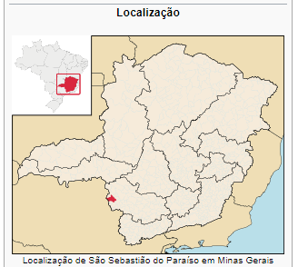

São Sebastião do Paraíso é um município brasileiro do estado de Minas Gerais, situado na divisa com o estado de São Paulo. A população estimada em 2020 era de 71.445 habitantes. A área é de 814,925 km². O município tem como principal atividade a produção de café.
No recenseamento geral de 1920, o município era constituído por 4 distritos eram eles: São Sebastião do Paraíso, São Tomás de Aquino, Goianases e Espírito Santo do Prata.[42] Em divisão administrativa referente ao ano de 1933, o município é constituído de 5 distritos: São Sebastião do Paraíso, Capetinga, Espírito Santo do Prata, Guardinha e Goianases. O Decreto-lei Estadual em 1938, desmembra do município de São Sebastião do Paraíso os distritos de Capetinga e Goianases, para formarem o novo município de Capetinga. Ainda sob a mesma Lei, o distrito de Espírito Santo da Prata passou a denominar-se Pratápolis. Em 1943 é desmembrado do município de São Sebastião do Paraíso o distrito de Pratápolis, elevado à categoria de município. Em divisão territorial datada de 1960, o município é constituído de 2 distritos: São Sebastião do Paraíso e Guardinha. Assim permanecendo em divisão territorial datada de 2014.[42] Em 2017, São Sebastião do Paraíso era formada por 41 bairros, os quais eram: Centro, Alto Bela Vista, Bela Vista, Brás, Califórnia Garden, Cidade Nova, Conjunto Maria Italiana, Conjunto Monsenhor Mancini, Cristo Rei, Jardim América, Jardim Bernadete, Jardim Coimbra, Jardim das Acácias, Jardim das Paineiras, Jardim Daniela, Jardim Acapulco, Jardim Itamaraty, Jardim Mediterranèe, Jardim Novo Milênio, Jardim Ouro Verde, Jardim São José, Jardim Planalto, Lagoinha, Mocoquinha, Nascentes do Paraíso, Paraíso do Bosque, Parque das Andorinhas, Parque São Francisco, Parque São Judas Tadeu, Portal dos Ipês, Residencial Beldevere, Real Grandeza, Residencial Santa Tereza, Residencial Morumbi, Rosentina Figueiredo, Rubens Rocha Gonçalves, San Genaro, São Sebastião, Veneza, Verona, Vila Alza, Vila Formosa, Vila Helena, Vila Helena, Vila Ipê, Vila João XXIII, Vila Mariana, Vila Operária, Vila Santa Maria e Vila Muschioni.
A corrida pela descoberta de ouro no Sul de Minas fez surgir no século XVII, a cidade de Jacuí, precursora de todas as cidades da região. Após a mineração entrar em declínio, cujos efeitos ainda podem ser vistos nos limites perímetros da cidade, seus moradores começaram a se dedicar tanto a agricultura quanto a pecuária. A partir da adaptação natural surgiram inúmeras fazendas, e dentre essas, 'Fazenda da Serra', propriedade da família Antunel Maciel, família essa constituída de grandes criadores de gado. A expansão do café na região de Campinas para o oeste Paulista, impulsionou a cafeicultura na região de Ribeirão Preto. A proximidade com a zona cafeicultora de Ribeirão Preto e a própria vocação agrícola de Paraíso fez da cidade umas das maiores produtoras de café no Estado na época, chegando a colher, no final do século XIX, doze milhões de sacas anuais. A participação da cidade no surto cafeeiro do Segundo Reinado fez com a cidade fosse beneficiada com a vinda de primeiras levas de imigrantes, que chegavam em carros de boi, depois de desembarcar na estação da Cia Ferroviária São Paulo e Minas em Mococa. No começo de 1870, crianças de pais italianos já haviam sido registradas na cidade. Porém, as primeiras estações de trem da cidade chegaram apenas no ano de 1911, apesar de preencher as atas da Câmara desde 1901. Em meados de 1893 em diante, a cidade recebeu cerca de 500 colonos italianos, contribuindo para o desenvolvimento da cidade. Visto a grande contribuição dos imigrantes italianos para a cidade foi criado pelo então prefeito Luiz Calafiori, um monumento que homenageasse os italianos e seus descendentes. O artista tcheco Johann Musil foi o responsável pela criação da peça em bronze 'Monumento aos Imigrantes' localizada na Praça dos Imigrantes. São Sebastião do Paraíso, antigo distrito criado em 1855, foi elevado à categoria de vila em 13 de setembro de 1870.
O município de São Sebastião do Paraíso está distante 400 km de Belo Horizonte, capital estadual, e 755 km de Brasília, capital federal. Ocupa uma área de 814,925 km², e se limita com os municípios de São Tomás de Aquino e Patrocínio Paulista a noroeste, Pratápolis a nordeste, Capetinga a norte, Itamogi e Monte Santo de Minas a sul, Jacuí a sudeste, Santo Antônio da Alegria a sudoeste, Altinópolis a oeste. De acordo com a divisão do Instituto Brasileiro de Geografia e Estatística vigente desde 2017, o município pertence às Regiões Geográficas Intermediária de Varginha e Imediata de São Sebastião do Paraíso. Até então, com a vigência das divisões em microrregiões e mesorregiões, o município fazia parte da microrregião de São Sebastião do Paraíso, que por sua vez estava incluída na Mesorregião do Sul e Sudoeste de Minas.
O clima paraisense é caracterizado, segundo a classificação climática de Köppen, como tropical de altitude (ou Cwb) com invernos secos, verões chuvosos e temperaturas moderadas durante todo o ano. Com temperatura média compensada anual de 21 °C e pluviosidade média de aproximadamente 1 750 mm/ano, concentrados entre os meses de outubro e março, sendo janeiro o mês de maior precipitação (335,5 mm). O mês mais quente, fevereiro, tem temperatura média de 23 °C, sendo a média máxima de 29,2 °C e a mínima de 18,1 °C. E o mês mais frio, junho, de 17,3 °C, sendo 25,4 °C e 11 °C as médias máxima e mínima, respectivamente. Outono e primavera são estações de transição.
Fonte: Wikipedia.